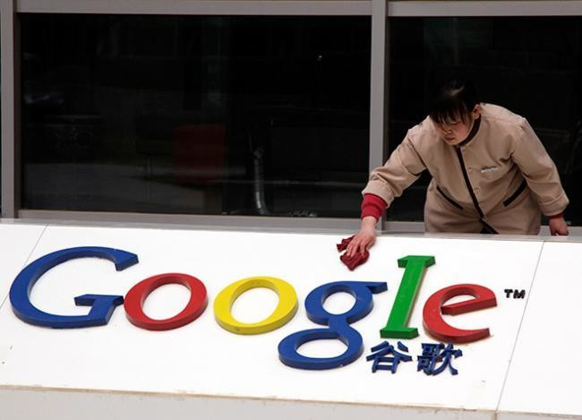

Página última vez actualizada: 21-8-21
Página última vez actualizada: 21-8-21
La historia de Google comienza en 1995, en la Universidad de Stanford. Larry Page se estaba planteando estudiar en Stanford y Sergey Brin, que ya estudiaba allí, fue el encargado de mostrarle el campus
Se cuenta que en su primer encuentro no estaban de acuerdo en casi nada; sin embargo, se aliaron al año siguiente. Trabajando desde sus dormitorios, construyeron un motor de búsqueda que utilizaba enlaces para determinar la importancia de cada página en la Web. Este motor de búsqueda se llamó Backrub. Poco después, Backrub pasó a llamarse Google (¡menos mal!). El nombre, que hacía referencia a la expresión matemática del número 1 seguido de 100 ceros, reflejaba con exactitud el objetivo de Larry y Sergey: organizar la información del mundo y hacerla útil y accesible de forma universal
Durante los siguientes años, Google no solo captó la atención de la comunidad académica, sino también la de los inversores de Silicon Valley
En agosto de 1998, Andy Bechtolsheim (cofundador de Sun Microsystems) extendió un cheque por valor de 100.000 dólares a Larry y Sergey, lo que les permitió constituir oficialmente Google Inc
Con esta inversión, el nuevo equipo evolucionó y pasó de trabajar desde sus dormitorios a crear su primera oficina: un garaje en las afueras de Menlo Park (California), propiedad de Susan Wojcicki (empleada número 16 y actual CEO de YouTube). Ordenadores anticuados, una mesa de ping-pong y una alfombra de color azul intenso fueron el escenario de sus primeros días y sus largas noches de trabajo (aunque la tradición de utilizar colores se mantiene en la actualidad)
el primer servidor de Google estaba construido con piezas de Lego y el primer "Doodle" (1998) tenía en su logotipo un muñeco de palitos que anunciaba a los visitantes del sitio web que todo el equipo estaba haciendo pellas en el festival Burning Man
En agosto de 2004 Google salió a bolsa y, desde entonces, inversores de todo el mundo pueden comprar acciones de la empresa. Todavía hoy los fundadores Page y Brin conservan el 14% de las acciones y controlan más de la mitad del poder de voto
A partir del año 2000 empezaron a vender anuncios que aparecían como resultados en el buscador cuando el usuario buscaba determinadas palabras clave
Hoy en día, Google forma parte del conglomerado de empresas Alphabet, dirigido por el mismo Larry Page. La compañía tiene más de 60.000 empleados y tiene oficinas en 50 países
Desde 2010, este gigante ha venido adquiriendo alrededor de 2 compañías al mes. Compra startups y otras empresas interesantes que son complementarias relacionadas con energías renovables, automovilismo tecnología, etcétera. Las tres compras más caras de empresas en toda la historia de Google han sido en este orden: Motorola, DoubleClick y Youtube. Puedes ver la lista de fusiones y adquisiones de Google en Wikipedia
Uno de los grandes acontecimientos en la historia de Google es la aparición de Google Ads en el año 2000. La opción de anuncios de Google es la principal fuente de ingresos de la plataforma y la convierte en el medio publicitario más importante a nivel mundial. De hecho, tan solo en 2018, ingresó más 140.000 millones de euros en publicidad
Google, se ha convertido en un emblemático caso de complicidad con la censura al haber pactado con el gobierno de China los contenidos de sus páginas
Actualmente y como parte de su estrategia comercial de búsqueda de nuevos mercados, los resultados del buscador orientados al usuario chino sufren un filtrado previo, que obvia, aunque informando de ello, los resultados que puedan ser contrarios a las políticas del gobierno
Productos como Google Wave nunca lograron despegar ni consolidarse en el mainstream, un proyecto tan prometedor y asombroso como Google Glass acaba de ser archivado, pero el “fracaso” o la intuición de que estos productos no se harían globales no los ha detenido
Eso es Google: la empresa que le ha ganado a todas las otras tecnológicas en su capacidad para poner en práctica el ensayo y el error, y para asumir este último como simple experimentación, en pos del desarrollo de tecnologías asombrosas, útiles y, sobre todo, que han transformado nuestra forma de vivir para siempre
su sistema de publicidad online que es el líder indiscutible de la industria y más recientemente, con la adquisición de empresas como Nest y su reciente inversión en Magic Leap